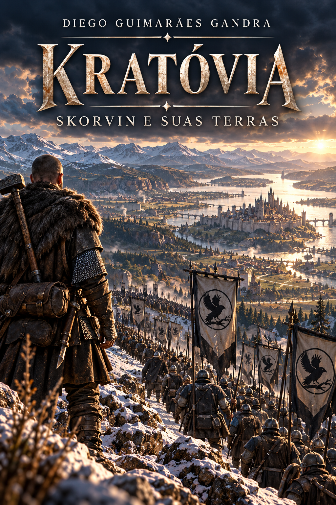

KRATÓVIA · LIVRO 3
As Terras de Skorvin
Depois de conhecer o homem, é hora de conhecer as terras que carregam seu nome.
A trajetória iniciada em Um Homem chamado Skorvin amplia seu horizonte. Agora, o olhar se volta também para Kratóvia, para seus territórios, suas relações de poder e para as marcas deixadas por homens que ajudaram a moldar sua história.
As Terras de Skorvin continua a construção dessa perspectiva kratoviana do universo, aproximando o leitor de lugares, conflitos e memórias que ajudam a compreender como aquele povo enxerga a si mesmo — e as terras que considera suas.
POR TRÁS DA OBRA
Depois do homem, as terras.
Se o segundo livro da série atravessa a fronteira para apresentar Kratóvia por meio da trajetória de Skorvin, o terceiro amplia essa viagem. O personagem continua importante, mas o mundo ao seu redor passa a ocupar um espaço ainda maior.
Território, para Kratóvia, não é apenas uma linha desenhada em um mapa. É memória, presença, autoridade, dever e pertencimento. Compreender essas terras significa compreender também por que seus habitantes interpretam fronteiras e conflitos de maneira tão diferente daqueles que, mais tarde, construiriam ValeDouro.
A narrativa aprofunda essa perspectiva sem transformar uma versão dos acontecimentos em verdade absoluta. Ao contrário, continua a proposta da série de permitir que diferentes povos contem suas próprias histórias e revelem aquilo que cada um acredita estar protegendo, conquistando ou perdendo.
É nesse movimento que Kratóvia deixa de existir apenas como força do outro lado da fronteira e ganha geografia, memória e identidade próprias.
Conhecer as terras de Skorvin é descobrir que uma fronteira separa territórios — mas também aproxima histórias que jamais existiram de forma isolada.
CONTEÚDO DIGITAL
Além das páginas.
Imagens e materiais da obra serão reunidos neste espaço conforme o desenvolvimento do livro.